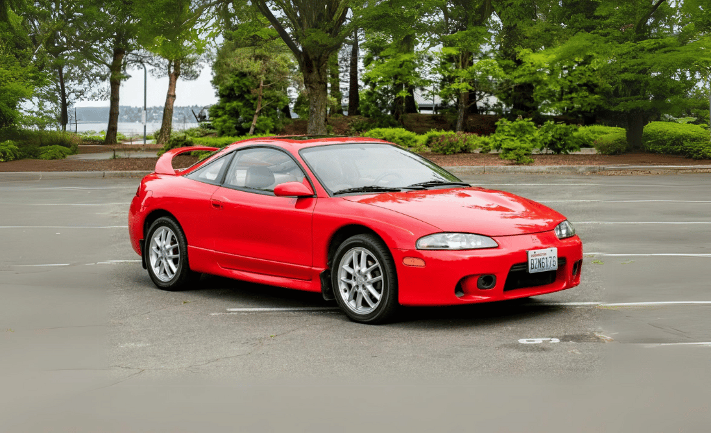
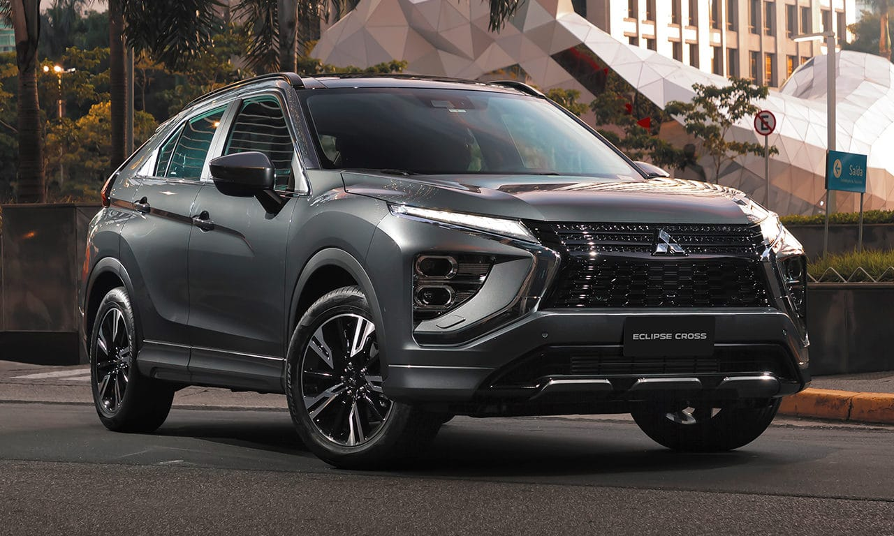
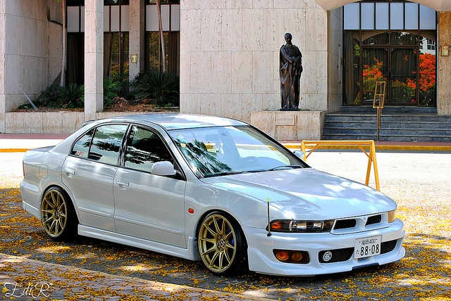
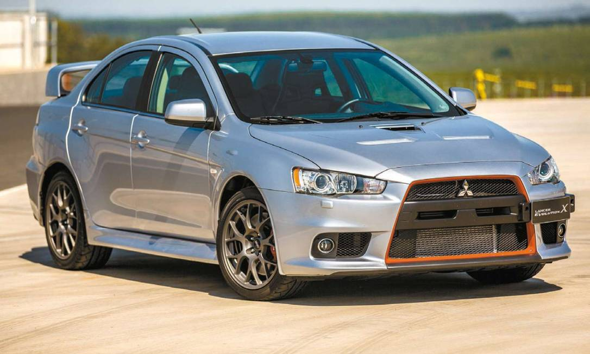
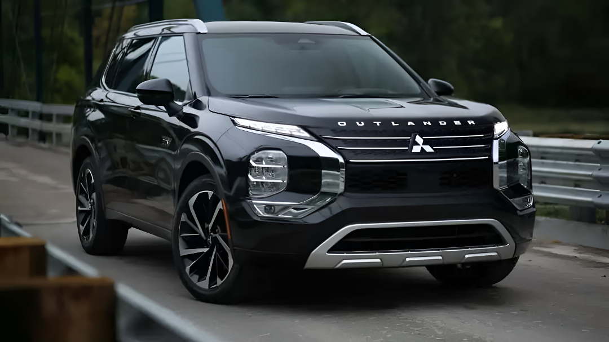
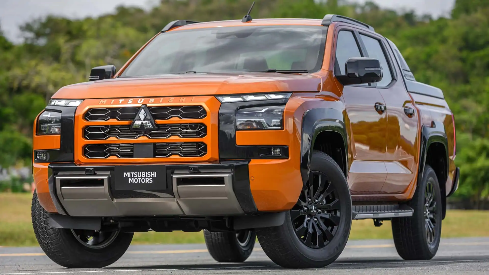

| Preço | R$ 120 ~ 180 mil |
| Consumo Cidade | 7,5 km/L |
| 0 a 100 km/h | 6,5s |
| Cavalos | 213 cv |
| Torque | 30 kgfm |

| Preço | R$ 165 ~ 185 mil |
| Consumo Cidade | 9,1 km/L |
| 0 a 100 km/h | 11,1s |
| Cavalos | 165 cv |
| Torque | 25,5 kgfm |

| Preço | R$ 90 ~ 140 mil |
| Consumo Cidade | 5,5 km/L |
| 0 a 100 km/h | 5,8s |
| Cavalos | 280 cv |
| Torque | 37,4 kgfm |

| Preço | R$ 55 ~ 70 mil |
| Consumo Cidade | 8,5 km/L |
| 0 a 100 km/h | 10,7s |
| Cavalos | 160 cv |
| Torque | 20,1 kgfm |

| Preço | R$ 220 ~ 250 mil |
| Consumo Cidade | 9,3 km/L |
| 0 a 100 km/h | 10,5s |
| Cavalos | 184 cv |
| Torque | 24,9 kgfm |

| Preço | R$ 280 ~ 310 mil |
| Consumo Cidade | 10,1 km/L |
| 0 a 100 km/h | 10,4s |
| Cavalos | 214 cv |
| Torque | 48 kgfm |